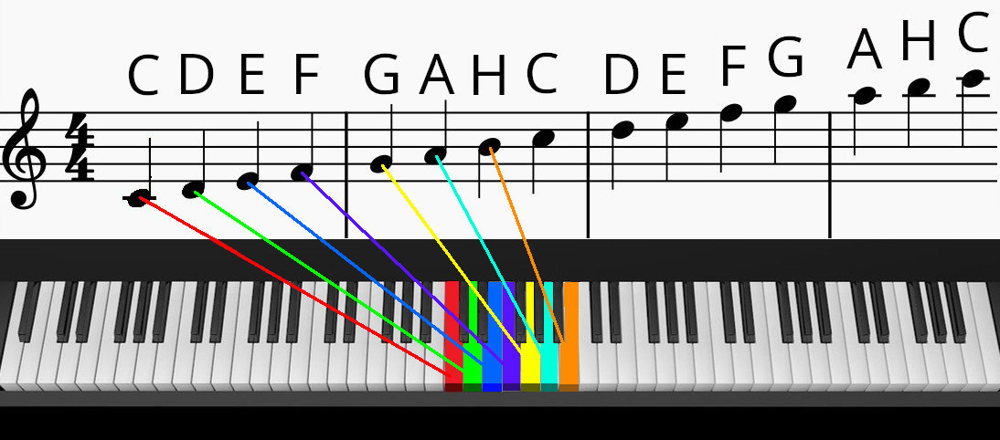
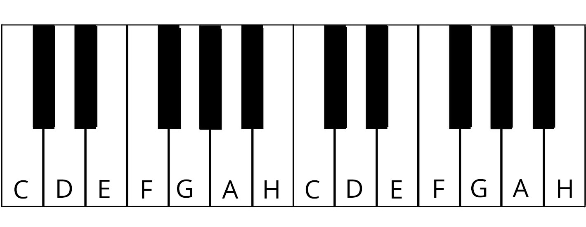
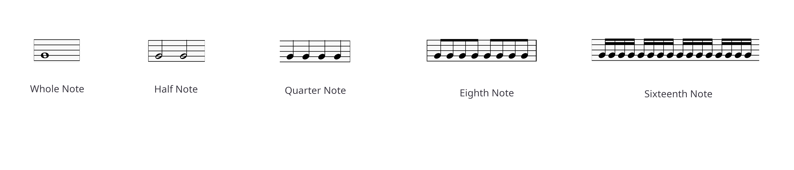
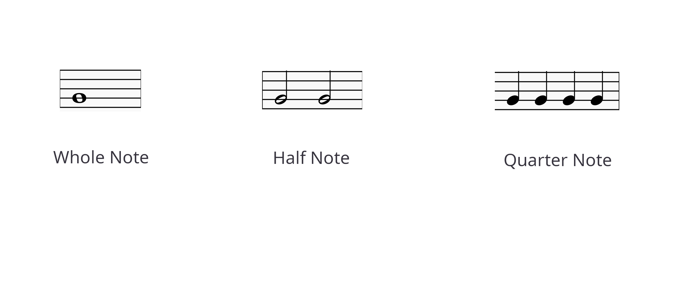
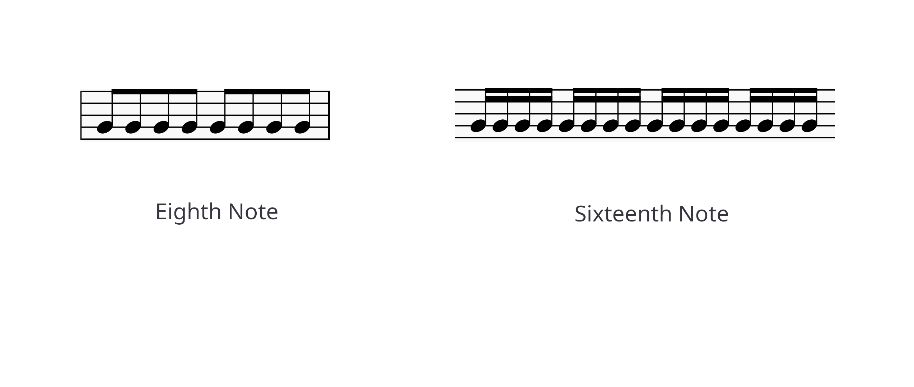

Kapiteln
Wie liest man Noten? Notenwerte Musikalische Pausen Schlüssel Taktarten Halbtöne und Ganztöne Vorzeichen Wie übt man das Notenlesen? SpielWie liest man Noten?
Jede Note hat einen Namen und einen bestimmten Tastenanschlag auf dem Klavier. Die Zuordnung der musikalischen Noten zu den Klaviertasten erfolgt logisch nach rechts:
Hier ist eine Übersicht der Tastenbezeichnungen auf der Klaviatur:
Versuche, die folgende Melodie sehr langsam mit der rechten Hand zu spielen. Hilf dir mit diesem Bild. Die Zahlen unter den Noten geben den Finger an, mit dem du die Note spielen sollst:
| Daumen | 1 |
| Zeigefinger | 2 |
| Mittelfinger | 3 |
| Ringfinger | 4 |
| Kleiner Finger | 5 |
Notenwerte
Die Notenwerte auf dem Klavier beziehen sich auf die Dauer, für die eine Note gehalten oder gespielt wird. Jeder Notenwert hat eine spezifische Zeitdauer im Verhältnis zum Takt der Musik, der durch die
Taktart bestimmt wird. Hier ist eine Übersicht der häufigsten Notenwerte:
1. Ganze Note
- Symbol: Ein offenes Oval ohne Hals.
- Dauer: Der längste Notenwert, der vier Schläge im Viervierteltakt (4/4) hält.
- Auf dem Klavier: Bei einer ganzen Note hältst du die Taste für vier Schläge gedrückt.
2. Halbe Note
- Symbol: Ein offenes Oval mit Hals.
- Dauer: Hält zwei Schläge im Viervierteltakt.
- Auf dem Klavier: Drücke und halte die Taste für zwei Schläge.
3. Viertelnote
- Symbol: Ein ausgefülltes Oval mit Hals.
- Dauer: Hält einen Schlag im Viervierteltakt.
- Auf dem Klavier: Drücke und halte die Taste für einen Schlag.
4. Achtelnote
- Symbol: Ein ausgefülltes Oval mit Hals und einem Fähnchen.
- Dauer: Hält einen halben Schlag im Viervierteltakt.
- Auf dem Klavier: Drücke und halte die Taste für einen halben Schlag. Oft in Paaren oder Gruppen gespielt.
5. Sechzehntelnote
- Symbol: Ein ausgefülltes Oval mit Hals und zwei Fähnchen.
- Dauer: Hält einen Viertelschlag im Viervierteltakt.
- Auf dem Klavier: Drücke und halte die Taste für einen Viertelschlag. Diese Noten werden normalerweise schnell gespielt.
6. Punktierte Noten
- Symbol: Ein Punkt, der direkt nach einer Note steht.
- Wirkung: Der Punkt verlängert die Dauer der Note um die Hälfte ihres ursprünglichen Werts.
- Beispiel: Eine punktierte Halbe Note dauert drei Schläge (zwei Schläge für die halbe Note + ein zusätzlicher Schlag).
7. Gebundene Noten
- Symbol: Eine gebogene Linie, die zwei Noten mit demselben Ton verbindet.
- Wirkung: Die Noten werden als eine einzige Note mit kombinierter Dauer gespielt.
- Auf dem Klavier: Halte die Taste für die gesamte Dauer der gebundenen Noten.
Hier ist eine Übersicht über die Notenwerte:
  Alle oben gezeigten Musikabschnitte (Ganze Note, Halbe Note, Viertelnote, Achtelnote, Sechzehntelnote) erfordern die gleiche Zeit zum Spielen (vier Schläge).
Musikalische Pausen
- Ganze Pause: Stille für vier Schläge.
- Halbe Pause: Stille für zwei Schläge.
- Viertelpause: Stille für einen Schlag.
- Achtelpause: Stille für einen halben Schlag.
- Sechzehntelpause: Stille für einen Viertelschlag.
Ruhesymbole zeigen Stille an und haben Äquivalente zu den entsprechenden Notenwerten:
Die Notation und Dauer der Pausen sind die gleichen wie bei den Notenwerten. Sie sind wichtig, um die Rhythmik eines Stückes korrekt zu interpretieren.
Schlüssel
Der Schlüssel gibt an, wie die Noten auf der Notenlinie gelesen werden müssen. Die wichtigsten Schlüssel sind:
1. Violinschlüssel
- Zeigt an, dass die Noten auf der Notenlinie in der hohen Lage gelesen werden.
- Meistens für die rechte Hand auf dem Klavier verwendet.
- Hier befindet sich die Note G auf der zweiten Linie von unten.
2. Bassschlüssel
- Zeigt an, dass die Noten auf der Notenlinie in der tiefen Lage gelesen werden.
- Meistens für die linke Hand auf dem Klavier verwendet.
- Hier befindet sich die Note F auf der vierten Linie von unten.
3. Alt- und Tenorschlüssel
- Weniger häufig auf dem Klavier, aber wichtig für andere Instrumente.
- Der Alt-Schlüssel zeigt die Note C auf der dritten Linie von unten an.
- Der Tenorschlüssel zeigt die Note C auf der vierten Linie von unten an.
Taktarten
Die Taktart bestimmt, wie viele Schläge pro Takt vorhanden sind und welche Notenwerte einen Schlag erhalten:
- 4/4 Takt: Vier Schläge pro Takt, jeder Schlag ist eine Viertelnote.
- 3/4 Takt: Drei Schläge pro Takt, jeder Schlag ist eine Viertelnote. Bekannt aus Walzern.
- 2/4 Takt: Zwei Schläge pro Takt, jeder Schlag ist eine Viertelnote.
- 6/8 Takt: Sechs Schläge pro Takt, jeder Schlag ist eine Achtelnote.

Die Taktart gibt die Struktur des Musikstücks vor und beeinflusst den Rhythmus und die Betonung.
Halbtöne und Ganztöne
Auf dem Klavier sind die Schritte zwischen den Tasten in Halbtonschritte und Ganztöne unterteilt:
- Ein Halbton: Der kleinste Abstand zwischen zwei benachbarten Tasten auf dem Klavier.
- Ein Ganzton: Zwei Halbtöne, z.B. von C nach D.

Die Erkennung von Halbtönen und Ganztönen ist entscheidend für das Verständnis der Musiktheorie und der Klavierharmonie.
Vorzeichen
Vorzeichen ändern die Tonhöhe einer Note und sind wichtig für die richtige Interpretation der Musik:
- Kreuz (#): Erhöht die Note um einen Halbton.
- B (b): Senkt die Note um einen Halbton.
- Doppelkorridor (#): Erhöht die Note um zwei Halbtöne.
- Doppel-B (b): Senkt die Note um zwei Halbtöne.

Vorzeichen sind notwendig, um die richtige Tonhöhe der Noten zu gewährleisten und Veränderungen innerhalb eines Stückes anzuzeigen.
Wie übt man das Notenlesen?
Das Üben des Notenlesens erfordert Geduld und Ausdauer:
- Beginne mit einfachen Stücken und arbeite dich zu komplexeren vor.
- Übe regelmäßig, um deine Fähigkeiten zu verbessern.
- Verwende Notenübungsblätter und -tools, um deine Fähigkeiten zu testen.
- Spiele die Noten mit verschiedenen Geschwindigkeiten, um dein Tempo zu verbessern.
Ein nützliches Tool zum Üben ist das Notenlesespiel.
Spiel
Das Notenlesespiel ist ein interaktives Tool, um deine Notenlesefähigkeiten zu verbessern:
- Es stellt zufällig Notenfragen.
- Du kannst die richtige Taste auf dem Klavier auswählen.
- Es gibt Feedback und Punkte für richtige Antworten.